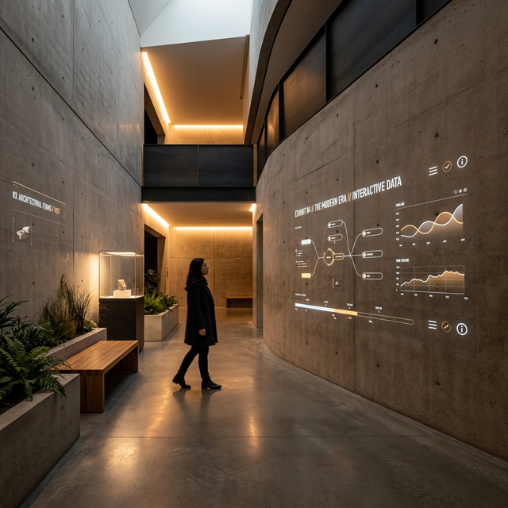

Selected Work
A curated selection of projects highlighting my approach to creative problem-solving and UX research and design.
Spatial Computing Navigation
Redefining indoor navigation using spatial anchors and architectural cues. A rapid prototype and user study balancing physical environments with digital overlays.

Navigation Guide for Pediatric Wheelchair Acquisition
Currently, no comprehensive, caregiver-centered resource in the US clearly explains the wheelchair acquisition experience from end to end, leading to costly delays.
Insurance policies typically require families to wait 3 to 5 years before a replacement is allowed, making each wheelchair decision largely irreversible. Yet families receive little structured guidance on how to navigate this complex system.
find out more →
Physical-Digital Retail Connect
Bridging offline architectural spaces with digital interactions to create a seamless, engaging customer journey that enhances brand loyalty and retail experience.